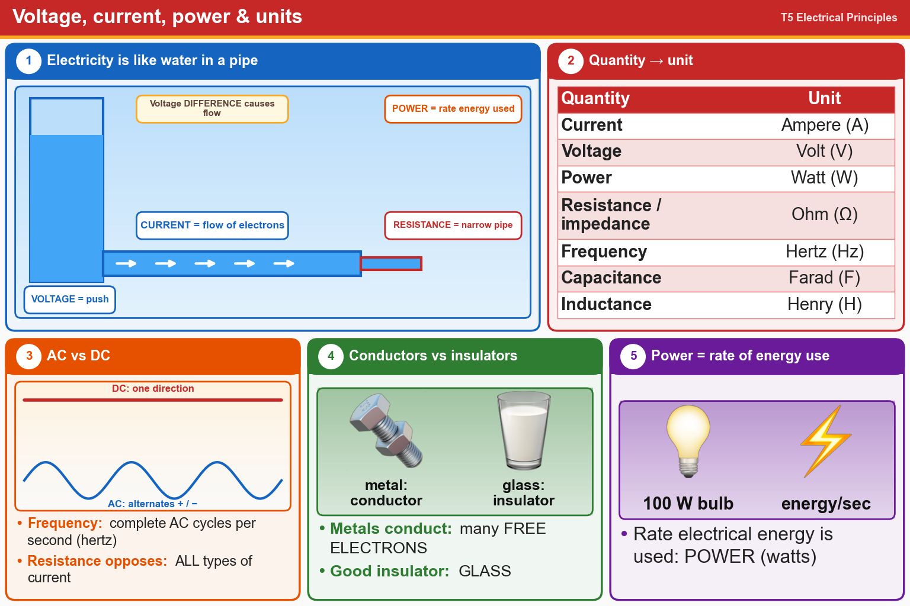

💡 Voltage pushes, current flows, resistance resists. Amps, volts, watts, hertz. Metals conduct, glass insulates.
📚 Key words
- Current
- The flow of electrons, measured in amperes (A).
- Voltage
- The electrical push (difference) that makes electrons flow, measured in volts (V).
- Power
- How fast electrical energy is used, measured in watts (W).
- Frequency
- Complete cycles per second, measured in hertz (Hz).
- AC / DC
- AC = current that switches direction back and forth. DC = one direction, like a battery.
- RF
- Radio Frequency: very fast AC. Resistance opposes DC, AC and RF current.
- Conductor
- Lets electricity flow easily. Metals do, because they have many free electrons.
- Insulator
- Blocks electricity, like glass.
Press Check on any question to see if you're right (it won't show the answer), or Grade at the bottom to grade the whole page.
T5A03
What is the term for the flow of electrons in an electric circuit?
✘A.Volts per second
✘B.Amperes per second
✘C.Voltage
✔D.Current
T5A05
A difference in which of the following causes electron flow?
✘A.Ampere-hours
✘B.Capacitance
✘C.Inductance
✔D.Voltage
T5A10
Which term describes the rate at which electrical energy is used?
✔A.Power
✘B.Voltage
✘C.Resistance
✘D.Current
T5A01
Electrical current is measured in which of the following units?
✘A.Ohms
✔B.Amperes
✘C.Watts
✘D.Volts
T5A02
Electrical power is measured in which of the following units?
✘A.Volts
✘B.Watt-hours
✔C.Watts
✘D.Amperes
T5A06
What is the unit of frequency?
✘A.Henry
✘B.Epicycles per second
✔C.Hertz
✘D.Farad
T5A04
What term describes the number of times per second that an alternating current makes a complete cycle?
✘A.Wavelength
✘B.Pulse rate
✘C.Wave number
✔D.Frequency
T5A09
Which of the following describes alternating current?
✘A.Current that alternates between a positive direction and zero
✔B.Current that alternates between positive and negative directions
✘C.Current that alternates between a negative direction and zero
✘D.All these answers are correct
T5A11
What type of current flow is opposed by resistance?
✘A.RF current
✘B.Direct current
✘C.Alternating current
✔D.All these choices are correct
T5A07
Why are metals generally good conductors of electricity?
✔A.They have many free electrons
✘B.They have relatively high Young’s modulus values
✘C.They have relatively high density
✘D.They have many free protons
T5A08
Which of the following is a good electrical insulator?
✘A.Graphite
✘B.Sea water
✘C.Stainless steel
✔D.Glass